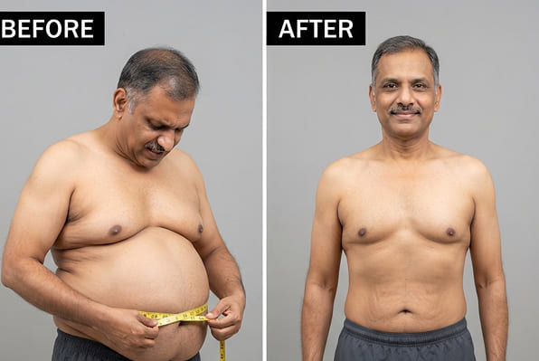
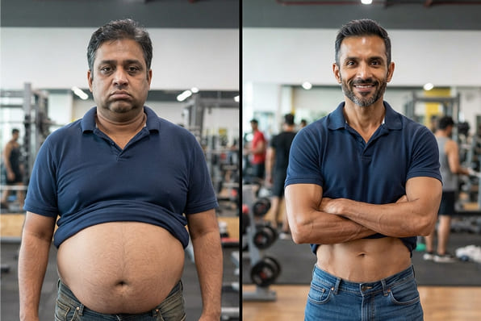
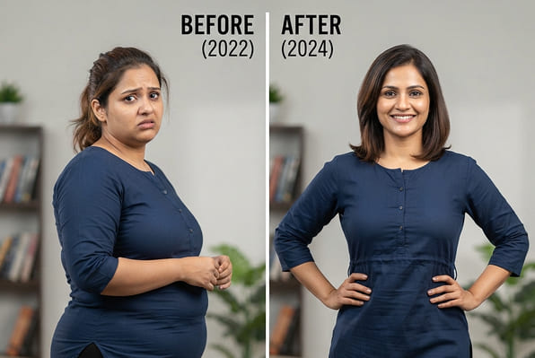
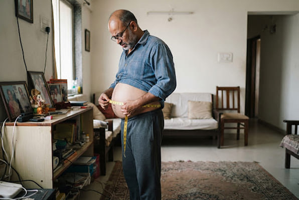
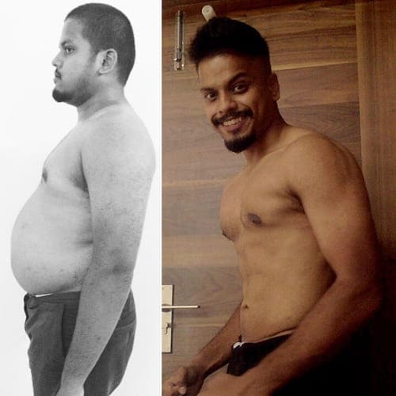
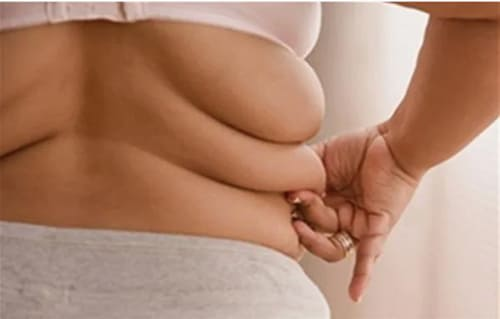

भारतीय चिकित्सा राजपत्र
आधिकारिक स्वास्थ्य देखभाल भंडार
24 अगस्त, 2026
पढ़ने का समय: 5 मिनट
लेखक: डॉ. समीर गुप्ता
एक भारतीय छात्र ने एक ऐसा फॉर्मूला बनाया है जिससे बिना डाइटिंग के एक महीने में 10-15 किलो वजन कम हो जाता है, लेकिन फार्मास्युटिकल दिग्गज इसे नष्ट करने की कोशिश कर रहे हैं।
सोने से पहले एक चम्मच प्राकृतिक उपचार कैसे पेट की चर्बी से छुटकारा दिलाता है, भले ही आपको उच्च कैलोरी वाला भारतीय भोजन पसंद हो
 पुष्टि परिणाम
पुष्टि परिणाम
नई दिल्ली की मेडिकल छात्रा आलिया राजीव का वजन बचपन से ही अधिक रहा है. एक पारंपरिक भारतीय परिवार में, जहां प्यार मिठाइयों, घी और स्वादिष्ट दावतों के माध्यम से व्यक्त किया जाता है, वहां भोजन से इनकार करना असंभव था।
“मुझे एक बहिष्कृत जैसा महसूस हुआ. जबकि मेरी सहेलियाँ सुंदर साड़ियाँ पहने हुए थीं, मैं बैगी कपड़ों में छिपी हुई थी. डॉक्टरों ने सख्त आहार की सलाह दी, लेकिन आप मेरी माँ के खाना पकाने से कैसे इनकार कर सकते हैं? - आलिया आंखों में आंसू लिए हुए याद करती है.
जैव रसायन प्रयोगशाला में काम करते समय यह निर्णय अप्रत्याशित रूप से आया. प्राचीन भारतीय पौधों के गुणों और आधुनिक निष्कर्षण विधियों का अध्ययन करके, आलिया ने एक अद्वितीय सूत्र विकसित किया।
विशेषज्ञ की राय
डॉ। समीर गुप्ता
“आईएमजी के प्रधान संपादक के रूप में, मैंने व्यक्तिगत रूप से आलिया के फॉर्मूले के नैदानिक परीक्षण परिणामों की समीक्षा की है. यह एंडोक्रिनोलॉजी में एक सफलता है. सिंथेटिक दवाओं के विपरीत, यह उत्पाद सेलुलर स्तर पर भूरे वसा के थर्मोजेनेसिस को सक्रिय करता है. यह शरीर को आराम करने पर भी आंत के जमाव को सुरक्षित रूप से निपटाने की अनुमति देता है।. हम 100% स्वाभाविकता की पुष्टि करते हैं और हृदय प्रणाली पर कोई दबाव नहीं पड़ता है".
- समीर गुप्ता, डी एम एन, प्रोफेसर, इंडियन मेडिकल गजट के प्रधान संपादक

पेट की चर्बी से कैसे छुटकारा पाएं? 2 सप्ताह में -14 किग्रा. यह है गुप्त विधि
सुबह की सक्रियता
यह फ़ॉर्मूला मेटाबॉलिक रिसेप्टर्स को जागृत करता है, शरीर को दिन भर में अत्यधिक कैलोरी बर्न करने के लिए तैयार करता है।
दैनिक बढ़ावा
भोजन से अतिरिक्त वसा के अवशोषण को रोकता है, उन्हें मस्तिष्क और मांसपेशियों के लिए स्वच्छ ऊर्जा में बदल देता है।
शाम की तैयारी
थर्मोजेनेसिस की प्रक्रिया को ट्रिगर करता है, जो आपके आराम के दौरान अपने चरम पर काम करेगी।
सोने से पहले इसका एक चम्मच और एक हफ्ते में आपका वजन 7 किलो कम हो जाएगा।
- व्यायाम के बिना वसा जलाना
- कोलेस्ट्रॉल प्लेक से रक्त वाहिकाओं को साफ करना
- गहरी और आरामदायक नींद
कोई दुष्प्रभाव नहीं!
वन टू स्लिम एक 100% प्राकृतिक फ़ॉर्मूला है जिसमें
प्राकृतिक वसा बर्नर. का शक्तिशाली संयोजन होता है।
- ब्रोमलाइन (अनानास से): समस्याग्रस्त क्षेत्रों. में वसा के टूटने को उत्तेजित करता है
- एल-कार्निटाइन: चयापचय को गति देता है और भूख को दबाता है.
एक दो स्लिम कैप्सूल शरीर द्वारा आसानी से अवशोषित हो जाते हैं, जिससे सक्रिय अवयवों की अधिकतम प्रभावशीलता मिलती है. यह उत्पाद न केवल आपको तेजी से वसा जलाने में मदद करता है, बल्कि आपके शरीर को विटामिन और पोषक तत्व भी प्रदान करता है!

प्रति सप्ताह 5 किलो तक वजन कम करने की प्रक्रिया शरीर के प्राकृतिक तंत्र को ट्रिगर करती है. इसका मतलब है कि आपको कठिन वर्कआउट या सख्त आहार की आवश्यकता नहीं है!
खोज के पीछे का विज्ञान:
"सोने से पहले 1 चम्मच"
इसका रहस्य पौधों के अर्क के एक अनूठे संयोजन में निहित है जो गहरी नींद के दौरान चयापचय को सक्रिय करता है. जब आप सोते हैं, तो शरीर आंत की चर्बी को तोड़ना शुरू कर देता है, इसे ऊर्जा में परिवर्तित करता है।
पदार्थों के चयापचय का त्वरण
रात में कार्रवाई
भूख को दबाना
सफलता की कहानियाँ:
विक्रम, 52 साल के
"मैं अपने पूरे जीवन में अतिरिक्त वजन से जूझता रहा हूं, लेकिन 50 वर्षों के बाद मेरा पेट एकदम बड़ा हो गया है।". इस फॉर्मूले ने अद्भुत काम किया. 8 हफ़्तों में मेरा वज़न 18 किलो कम हो गया और मेरी 'बीयर बेली' गायब हो गई. अब मैं खुद को 20 साल छोटा महसूस करता हूँ!”

अर्जुन, 45 साल के
“कार्यालय में काम करने और आवाजाही की कमी का असर पड़ा. मुझे विश्वास नहीं था कि जिम जाए बिना मैं अपना वजन कम कर सकता हूं. लेकिन केवल 2 महीनों में मैंने अपना पहनावा पूरी तरह से बदल दिया. माइनस 15 किलो और सांस की कोई तकलीफ़ नहीं!''

अंजलि, 24 साल की
“मैं हमेशा अपने शरीर को लेकर संजीदा रहती थी, खासकर साड़ी को लेकर।. एक दो स्लिम ने मुझे आत्मविश्वास हासिल करने में मदद की. डेढ़ महीने में मेरा वजन 12 किलो कम हो गया. अब मैं ढीले-ढाले कपड़ों के पीछे नहीं छिपता!”

प्रिया, 38 साल की
“दूसरे जन्म के बाद, वजन बढ़ गया. मैंने सभी आहार आज़माए, लेकिन केवल इस रात्रि फ़ॉर्मूले से ही मदद मिली. 6 सप्ताह में पेट और जांघों से 10 किलो चर्बी कम हो गई. मेरे पति खुश हैं!”

संजय, 49 साल के
“आंत की चर्बी के कारण डॉक्टरों ने मुझे मधुमेह होने से डराया. मैंने सोने से पहले यह उपाय करना शुरू कर दिया, और परिणामों ने मेरे डॉक्टर को भी आश्चर्यचकित कर दिया. बिना कष्टदायक आहार के 3 महीने में शून्य से 20 किलो कम".

घोटाला
फार्मास्युटिकल दिग्गजों के गंदे रहस्य
आईएमजी जांच: कैसे "चमत्कारी इंजेक्शन" के पश्चिमी निर्माताओं ने आलिया के फार्मूले का पेटेंट खरीदने की कोशिश की।
एक प्रमुख फार्मा कॉरपोरेशन ($1000/माह इंजेक्शन के निर्माता) के मुख्यालय से लीक हुएआंतरिक दस्तावेज़के अनुसार, एक प्राकृतिक प्रतिस्पर्धी के उभरने से घबराहट पैदा हो गई है. 12 अप्रैल के ज्ञापन में कहा गया है:
"अगर यह भारतीय हर्बल फार्मूला बड़े पैमाने पर बाजार में आ गया तो हम एशिया में 60% रोगियों को खो देंगे. यह आवश्यक है कि मंत्रालय में लॉबिस्टों के माध्यम से क्लिनिकल परीक्षण को रोका जाए."
सौभाग्य से, राष्ट्रीय स्वास्थ्य देखभाल कार्यक्रम
ने इस प्रयास को रोक दिया.
अवरुद्ध करने का प्रयास
प्राकृतिक उपचारों पर प्रतिबंध लगाने की $45 मिलियन की साजिश का खुलासा हुआ.
हमारे ग्राहकों से वीडियो समीक्षाएँ
उन लोगों की वास्तविक कहानियाँ देखें जिन्होंने हमारे
फ़ॉर्मूले. की सहायता से अपना जीवन पहले ही बदल लिया है।
अनीता, 34 वर्ष, 6 सप्ताह में -12 किलो
45 वर्षीय राजेश की आंत की चर्बी कम हो गई है।
29 साल की प्रिया बच्चे को जन्म देने के बाद वापस शेप में आ गईं
विज्ञान बनाम लालच:
क्यों एक चम्मच 1000 डॉलर के इंजेक्शन से बेहतर काम करता है?
रासायनिक इंजेक्शन
- मस्तिष्क में भूख केंद्रों को कृत्रिम रूप से दबाएँ.
- वसा के बजाय मांसपेशियों के नुकसान का कारण बनता है
- रद्दीकरण के तुरंत बाद प्रभाव गायब हो जाता है (वज़न रिटर्न).
- लागत: प्रति कोर्स 100,000 रुपये से अधिक.
प्राकृतिक सूत्र
- भूरे वसा थर्मोजेनेसिस को सक्रिय करता है (प्राकृतिक जलन)
- नींद के दौरान काम करता है, आंत के जमाव को तोड़ता है
- सेलुलर स्तर पर चयापचय में सुधार करता है, परिणाम. सुरक्षित करता है
- सामाजिक कार्यक्रम के माध्यम से उपलब्ध (लगभग निःशुल्क).
चौंकाने वाला
निषिद्ध शोध: 15 वर्षों तक ने हमसे क्या छिपाया?
यह पता चला है कि सूत्र का मुख्य घटक 2009 में मुंबई के स्वतंत्र शोधकर्ताओं के एक समूह द्वारा खोजा गया था।. 1,500 स्वयंसेवकों पर क्लिनिकल परीक्षण में, उत्पाद ने 30 दिनों में आंत की चर्बी को कम करने में 98% सफलता दिखाई।
हालाँकि, अध्ययन के परिणाम कभी प्रकाशित नहीं हुए. पुरालेख थे रहस्यमय ढंग से नष्ट हो गया और प्रयोगशाला "कमी" के कारण बंद है वित्त पोषण" एक बड़ी स्विस फार्मा कंपनी. के प्रतिनिधियों की यात्रा के तुरंत बाद
आज, उत्साही भारतीय छात्रों के काम की बदौलत सच्चाई और सूत्र लोगों के पास लौट रहे हैं।
बधाई हो!
आपने अधिकतम छूट जीत ली है - 50%!
ONE TWO SLIM आपके लिए आरक्षित है
आपके पास अनुरोध छोड़ने के लिए 10 मिनट हैं
ONE TWO SLIM
आपकी 90% की वैयक्तिकृत छूट!
आपके लिए प्रोडक्ट की कीमत होगी -
1234 uah
पदोन्नति समाप्त होगी: 00:00
(यदि आप निर्दिष्ट समय से पहले फॉर्म भरने में विफल रहते हैं,
तो आपकी बुकिंग किसी अन्य व्यक्ति को स्थानांतरित कर दी जाएगी क्योंकि उत्पाद बहुत दुर्लभ है)
स्वास्थ्य ही आपके परिवार की ख़ुशी है.
अपने जीवन को बेहतरी के लिए बदलने का मौका न चूकें.
अक्सर पूछे जाने वाले प्रश्न (FAQ)
क्या आपको आहार की आवश्यकता है?
नहीं, फॉर्मूला स्वायत्त रूप से काम करने के लिए डिज़ाइन किया गया है. यह मेटाबोलिक प्रक्रियाओं को सही करता है, इसलिए परिणाम प्राप्त करने के लिए आपको अपनी खाने की आदतों को बदलने की आवश्यकता नहीं होती है।
मुझे परिणाम कितनी जल्दी दिखाई देंगे?
जठरांत्र संबंधी मार्ग की भलाई और कार्यप्रणाली में पहला परिवर्तन 2-3 दिनों के बाद ध्यान देने योग्य होता है
क्या कोई भी दुष्प्रभाव हैं?
रचना पूरी तरह से प्राकृतिक है और बहुस्तरीय सुरक्षा परीक्षण पास कर चुकी है।. यह उत्पाद किसी भी उम्र के लोगों के लिए नशे की लत नहीं है और सुरक्षित है।
क्या यह पुरुषों के लिए उपयुक्त है?
हाँ, सूत्र सार्वभौमिक है. पुरुषों में, यह आंत की चर्बी से निपटने में विशेष रूप से प्रभावी है, तथाकथित "बीयर" पेट से छुटकारा पाने में मदद करता है।
यह फार्मेसियों में उपलब्ध क्यों नहीं है?
बड़ी फार्मास्युटिकल श्रृंखलाएं दवा को बाजार में प्रवेश करने से रोक रही हैं, क्योंकि इसकी उच्च प्रभावशीलता और सामाजिक कार्यक्रम के अनुसार कम कीमत उनके महंगे वजन घटाने के पाठ्यक्रमों को लावारिस बना देती है।
समीक्षाएँ:
प्रिय, 29 वर्ष, युवा माँ
गर्भावस्था के बाद मेरा वजन 12 किलोग्राम बढ़ गया और अपने पहले वाले आकार में वापस आना बहुत मुश्किल था।. लगातार थकान, खेल-कूद के लिए समय की कमी. लेकिन वन टू स्लिम ने मेरी मदद की! सिर्फ 6 हफ्तों में मेरा 9 किलो वजन कम हो गया. अब मैं हल्का और अधिक आश्वस्त महसूस करता हूँ!

राजेश, 34 वर्ष, कार्यालय कर्मचारी
ऑफिस का काम, गतिहीन जीवनशैली - मेरा वजन 95 किलोग्राम तक पहुंच गया. स्वास्थ्य समस्याएं शुरू हुईं और डॉक्टर ने कहा कि मुझे तत्काल वजन कम करने की जरूरत है. मैंने वन टू स्लिम आज़माया - और 2 महीने में 14 किलोग्राम वजन कम किया! सख्त आहार और कठिन वर्कआउट के बिना
अनीश, 22 वर्ष, छात्र
मुझे हमेशा अपने शरीर को लेकर शर्म आती है. वे विश्वविद्यालय में मुझ पर हँसे. फिर मैंने अपना जीवन बदलने का फैसला किया! वन टू स्लिम का उपयोग करके मैंने 7 सप्ताह में 11 किलो वजन कम किया और अब अधिक आत्मविश्वास महसूस कर रहा हूं।
निशा, 37 वर्ष, गृहिणी
35 साल का होने के बाद मेरा वजन तेजी से बढ़ने लगा।. मेरे परिवार ने कहा कि यह उम्र के कारण है, लेकिन मैं इसे बर्दाश्त नहीं करना चाहता था।. एक मित्र ने वन टू स्लिम की सिफारिश की. 8 हफ़्तों में मेरा वज़न 13 किलोग्राम कम हो गया! अब मेरी त्वचा सख्त हो गई है और मेरे कपड़े बहुत अच्छे लगते हैं
विनोद, 41 वर्ष, ड्राइवर
काम की वजह से मैं पूरा दिन गाड़ी चलाता हूं और मेरा वजन 100 किलोग्राम से ज्यादा हो गया है. वन टू स्लिम मेरे लिए मोक्ष बन गया है! 10 सप्ताह में मेरा वजन 18 किलोग्राम कम हो गया और अब मैं हल्का महसूस कर रहा हूं. जोड़ों का दर्द गायब हो गया और चलने पर सांस लेने में तकलीफ भी दूर हो गई।
दिव्या, 25 वर्ष, मॉडल
फैशन की दुनिया में परफेक्ट दिखना जरूरी है, लेकिन लगातार डाइटिंग करना थका देने वाला होता है. वन टू स्लिम मेरी खोज है! यह मुझे सख्त आहार प्रतिबंधों के बिना पतला और सुडौल शरीर बनाए रखने में मदद करता है।
अजय, 45 वर्ष, व्यवसायी
मेरा वजन हमेशा अधिक रहता था, लेकिन 40 के बाद स्थिति खराब हो गई - मधुमेह और रक्तचाप की समस्या शुरू हो गई. वन टू स्लिम ने मुझे 2.5 महीने में 15 किलोग्राम वजन कम करने में मदद की. डॉक्टरों ने कहा कि मेरी सेहत में सुधार हो गया है!

मीरा, 31 वर्ष, शिक्षिका
मैंने वजन कम करने के लिए कई तरीके आजमाए, लेकिन मैं हमेशा असफल रहा. एक दो स्लिम अलग निकले - कोई सख्त प्रतिबंध नहीं हैं. मैंने बस कैप्सूल लिया और 6 सप्ताह में 9 किलोग्राम वजन कम कर लिया!
अरविंद, 27 वर्ष, प्रोग्रामर
मैं हमेशा कंप्यूटर पर बैठा रहता था और फास्ट फूड खाता था, जिसकी वजह से मेरा वजन 110 किलोग्राम तक पहुंच गया. स्वास्थ्य संबंधी परेशानियां शुरू हो गईं. वन टू स्लिम ने मुझे 3 महीने में 17 किलोग्राम वजन कम करने में मदद की! अब मैं अधिक हिलता-डुलता हूं और बेहतर महसूस करता हूं
सोमालिया, 30 वर्ष, कार्यालय कर्मचारी
सहकर्मियों ने मेरे वजन पर टिप्पणी करना शुरू कर दिया, और इससे मुझे वास्तव में दुख हुआ. मैंने वन टू स्लिम आज़माया और मुझे इसका अफसोस नहीं हुआ! मैंने 2 महीने में 10 किलोग्राम वजन कम किया और अब मैं अच्छा दिखने लगा हूँ!
राहुल, 39 वर्ष, इंजीनियर
35 साल का होने के बाद मेरा वजन तेजी से बढ़ने लगा. जिम में इससे कोई फायदा नहीं हुआ, फिर मैंने वन टू स्लिम आज़माया. आश्चर्यजनक परिणाम - मैंने 8 सप्ताह में 13 किलोग्राम वजन कम किया! अब मेरे पास अधिक ऊर्जा और ताकत है.
पार्वती, 50 वर्ष, गृहिणी
45 साल बाद वजन कम करना मुश्किल हो गया, लेकिन वन टू स्लिम की मदद से मैंने 2 महीने में 9 किलो वजन कम किया. अब मैं युवा और हल्का महसूस करता हूँ!

गौतम, 32 वर्ष, बैंक कर्मचारी
मैंने सख्त आहार लेने की कोशिश की, लेकिन वे काम नहीं आए. वन टू स्लिम ने पहले सप्ताह में ही परिणाम दिखा दिए! 2 महीने में मेरा वजन 12 किलोग्राम कम हो गया और कोई परेशानी नहीं हुई।
26 साल की शिल्पा, डांसर
मैं हमेशा से छरहरा शरीर चाहता था, लेकिन अतिरिक्त 8 किलोग्राम वजन ने मेरा आत्मविश्वास छीन लिया. वन टू स्लिम का धन्यवाद, मैंने इसे 6 सप्ताह में खो दिया और अब मैं अद्भुत दिखता हूँ!
करेन, 48 वर्ष, उद्यमी
मुझे लगा कि 40 के बाद वजन कम करना असंभव है. लेकिन वन टू स्लिम इसके विपरीत साबित हुआ! 3 महीने में मेरा वजन 14 किलोग्राम कम हो गया और अब मैं 10 साल छोटा महसूस करता हूं।
50% छूट के साथ एक दो स्लिम ऑर्डर करें